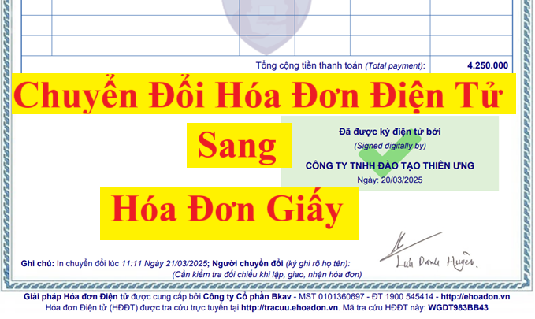

Chuyển đổi hóa đơn điện tử thành hóa đơn giấy hiện nay đang được quy định tại điều 7 của Nghị định 123/2020/NĐ-CP quy định về hoá đơn điện tử như sau:
1. Hóa đơn điện tử, chứng từ điện tử hợp pháp được chuyển đổi thành hóa đơn, chứng từ giấy khi có yêu cầu nghiệp vụ kinh tế, tài chính phát sinh hoặc theo yêu cầu của cơ quan quản lý thuế, cơ quan kiểm toán, thanh tra, kiểm tra, điều tra và theo quy định của pháp luật về thanh tra, kiểm tra và điều tra.
2. Việc chuyển đổi hóa đơn điện tử, chứng từ điện tử thành hóa đơn, chứng từ giấy phải bảo đảm sự khớp đúng giữa nội dung của hóa đơn điện tử, chứng từ điện tử và hóa đơn, chứng từ giấy sau khi chuyển đổi.
3. Hóa đơn điện tử, chứng từ điện tử được chuyển đổi thành hóa đơn, chứng từ giấy thì hóa đơn, chứng từ giấy chỉ có giá trị lưu giữ để ghi sổ, theo dõi theo quy định của pháp luật về kế toán, pháp luật về giao dịch điện tử, không có hiệu lực để giao dịch, thanh toán, trừ trường hợp hóa đơn được khởi tạo từ máy tính tiền có kết nối chuyển dữ liệu điện tử với cơ quan thuế theo quy định tại Nghị định 123/2020/NĐ-CP.
